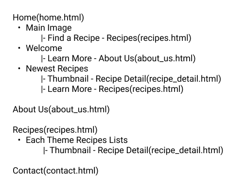

Report: Large Coursework
Hikari Nakamura
- Introduction: What is the essential story being told by your site and what type of structure
did you choose to implement.
- The site I created is a website that introduces recipes. The site's structure is as follows: home.html shows some of the latest recipes, about_us.html talks about the site's history and how it was founded, recipes.html shows a list of recipes, and from there, you can go to recipe_detail.html to see the ingredients and instructions. In contact.html, there is a contact form that users can send in their questions or recipes. There are a lot of recipe sites out there, but many of them are complicated, with blog posts and recipes mixed and complex leads to get to the recipes. I designed the site to be a reference site for users to plan their daily menus. By keeping the design as simple as possible and eliminating blog posts, I made it easy to use and structured to get the information they wanted quickly. In addition to introducing the recipes, I also created an About Us page to explain the history and background behind this recipe site to users to learn more about it. In recipes.html, which is the most crucial part of this site, the recipes are arranged according to each theme. In addition, the banner images are displayed on a carousel to help convey the message visually.
- State 3 things that have inspired you when creating your website. These could include
guest speakers, other websites, artists, developers etc.
- In the beginning, I looked at as many recipe sites as I could to research and create this site. I referred to the final three recipe sites, took screenshots, and raised each site's good points and improvement points. Based on this information, I created wireframes. For the design of the site, I used Pinterest for inspiration. For the colors, I used the app "COOLORS" as a reference to create a color combination that was not too loud and not too dark.
- State 3 ways in which your site is accessible.
- For the accessibility of the site, I tried to use semantic HTML tags. Furthermore, I made it mandatory to specify the alt attribute in the image tag and set the text to be about the "topic" that the HTML document is trying to convey, not about how the HTML is coded (meta-information). I also used aria-required for the contact form so that visually impaired people can understand the form's required fields.
- State 3 ways in which you have considered usability in your site
- The overall design is simple, and the header is fixed so that users can move to other pages while scrolling. A hamburger menu was used on a smartphone-sized screen to unify the menu. Also, by shortening the path to the recipes, I made it easier for users to find the recipes. The design is responsive so that it looks good on any device. In addition, the contact form checks the user's input, and if it is not filled in, the line in the corresponding field turns red, and an error message is displayed.
- State 3 things you had to learn/find out by yourself when creating your site, and describe
how you did that (i.e. what searches you did, any new tools/techniques you learned, any
changes/adaptations you made to a particular resource to make it work with your site).
- First, I studied and learned about the unfamiliar and useful operations of Figma design tools by watching youtube videos, etc. For HTML, I checked the tag specifications on the W3School website, and for CSS and JavaScript, I referred to various websites for implementing what I wanted and compared which method best suited my needs. I also learned by watching youtube videos on modern writing styles.
- how you did that (i.e. what searches you did, any new tools/techniques you learned, any
changes/adaptations you made to a particular resource to make it work with your site).
- The first step in creating the site was to think about personas. I researched what kind of users would use the site and what they wanted. Eventually, I set the goal of making it easy to get to the recipes. I then analyzed three well-known recipe sites. The famous sites had a sophisticated design and offered a wide variety of content, which helped create my site. I chose to use Figma, the design tool for creating the wireframes and design. It was easy to use because it could be operated on a browser, so there was no need to worry about data loss. I believe that the essential part of a recipe site is the photos of food, so I selected the images to be used on the site very carefully. For the editor tool, Web Storm was chosen for coding. It saved us a lot of coding time by checking for errors as needed. I learned various coding techniques. In HTML, The implementation of the contact form seemed difficult, but I tried to implement it properly using semantic tags. Also, writing CSS using variables was very useful, and adding CSS animations on page load improved the site's quality. As for JavaScript, DOM manipulation led to improved usabilities, such as dynamically changing text color and changing the content according to conditions. As for the JavaScript library, I also considered jquery, but while jquery can be used for a wide range of things, the file itself is hefty. In addition, most jquery can be replaced by pure JavaScript, so I did not use it. Therefore, I searched for carousel libraries written in pure JavaScript and settled on splice.js. It was challenging to read the documentation and make changes to fit the site's design. Although it was developed by an individual, the code was managed through Github, which prevented data loss and helped me learn git. Once some coding was completed, I created a Favicon and a banner image for SNS sharing. Those images were made on Figma.
- What aspect(s) of your work do you think worked well and why?
- First of all, I did an excellent job in site design and structure, considering usability. I was not sure if I could properly implement this design in HTML and CSS at the design stage, but I could implement it by referring to web blogs and videos, which was a great learning experience and gave me confidence in myself. Although It was challenging to replicate the design in the coding phase, I could also efficiently research the contents I wanted to implement on the web. For example, the main image is also the header's background, so it needed to be set as the background image in the CSS. Also, the main image was required to be changed on each page. In addition, since the design changed depending on the device's width, it was necessary to write HTML and CSS that considered the design after the change. I also think I could put together a clean file structure. As for the CSS file structure, the header, footer, and common parts are modularized, and the CSS files are separated for each page so that the minimum code required for each page is loaded. For JS files as well, I divided the files by purpose and loaded the target file on the necessary page, which also affects the speed of page loading, resulting in improved usability.
- What aspect(s) of your work could be improved, and how might you do things differently
another time?
- I could create a site that meets our objectives, but I believe I could have added more functions to improve usability if there are areas for improvement. For example, recipes are currently listed on the recipe page, but it would be easier to search for a recipe if it were possible to search for it using the search form. I also thought it would save time for users to re-calculate the number of ingredients in a recipe if it could change according to the number of people required. I could have used more CSS animations to make the site more visually attractive, and I could have included video clips of recipes to make it easier to understand how they are made. In terms of accessibility, it took me a long time to understand WAI-ARIA specifications, and if I had more time, I would have been able to make better use of it. If there were a next time, I would have spent more time coding. Coding took longer than expected, and I often ran into unexpected problems. In addition, I would also like to spend more time on user research and create a site that specializes in usability.
- What resources were used when creating your work?
-
- Appendices: Site Map, Wireframes and Mockups
-
Site Map

Wireframes
Design
- Format for citing online resource:
-